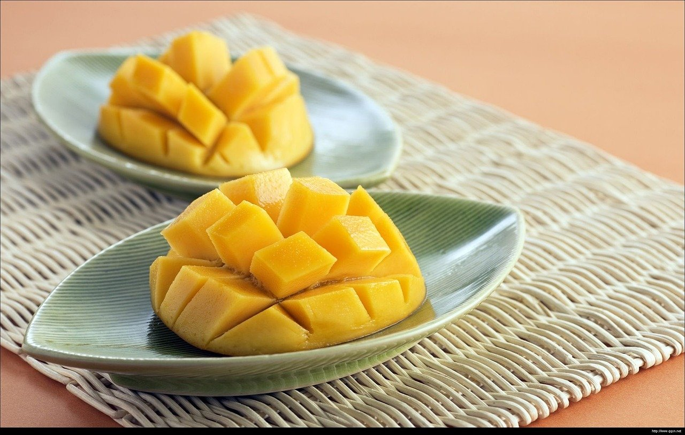

대만 망고빙수 시즌, 언제 가야 생망고를 먹을까?
겨울에 먹은 망고빙수가 기대와 달랐다면 — 품종별 제철을 알고 가면 선택이 쉬워져요.
게시
"10월에 가도 생망고 빙수 먹을 수 있어요?" 대만 망고빙수 시즌은 대체로 4월부터 10월까지예요. 다만 품종마다 제철이 달라서 같은 여름이라도 맛이 조금씩 달라요. 농업부 품종 정보와 실제 여행자들의 경험을 바탕으로 시기별로 정리해봤어요.
01 · 대만 망고빙수 시즌, 품종별 제철 한눈에 보기
| 제철 | 특징 | |
|---|---|---|
| 토종 망고 | 4월부터 | 작고 향이 진한 편 |
| 아이원(愛文, 애플망고) | 4월 말~7월 말, 5~6월이 절정 | 빙수에 가장 많이 쓰이는 품종 |
| 진황(金煌) | 5~8월 | 크고 과육이 많은 편 |
| 카이터(凱特) | 8~10월 | 늦여름·가을에 나오는 품종 |
02 · 비수기에는 냉동 망고일 수 있어요
제철이 아닌 겨울·초봄에도 망고빙수를 파는 가게가 있지만, 이때는 냉동 망고를 쓰는 경우가 많아요. 생망고 사용 여부는 가게 공지나 메뉴판에 적어두는 곳이 많으니 주문 전에 확인해보세요. 가을에 간다면 카이터 품종을 쓰는지 물어보는 것도 방법이에요.

03 · 망고빙수 주문 요령
시즌 한정 메뉴 확인 제철에만 파는 생망고 메뉴가 따로 있는 가게가 많아요.
둘이서 하나 양이 많은 편이라 둘이 하나를 나눠 먹는 여행자가 많아요.
오전이나 늦은 오후 한여름 오후에는 줄이 길어지기 쉬워요.
가격은 가게마다 생망고 메뉴는 시세에 따라 가격이 바뀌어요. 이 글에는 가격을 적지 않았어요.
생망고만 사 먹기 빙수 대신 과일가게에서 제철 망고를 사서 숙소에서 먹는 여행자도 많아요. 망고는 한국으로 가져갈 수 없으니 현지에서 다 드세요.
04 · 여행 시기별 추천
5~6월에 간다면 아이원 망고가 가장 맛있을 때라 망고빙수를 일정에 꼭 넣어볼 만해요. 7~8월은 진황까지 나와 선택지가 넓어지고, 9~10월은 카이터 위주예요. 11월부터 3월 사이라면 망고보다 딸기나 팥 같은 겨울 빙수를 고르는 여행자도 많아요.
"망고빙수는 5~6월, 그 밖에는 생망고인지 물어보기." — 계절마다 대만 빙수를 먹어 본 여행자들의 조언을 요약했습니다.
망고 산지와 가까운 타이난에는 빙수 가게가 많아요. 타이난 빙수 맛집 모음에서 망고빙수 가게 위메이 망고빙(玉梅芒果冰)을 볼 수 있고, 주변 식당은 타이난 맛집 지도에 있어요. 타이베이에서 먹는다면 타이베이 빙수 맛집을 참고하세요.
지도에서 타이난 빙수 맛집을 찾아보세요
망고 산지와 가까운 타이난의 빙수 가게를 지도에서 확인해보세요.